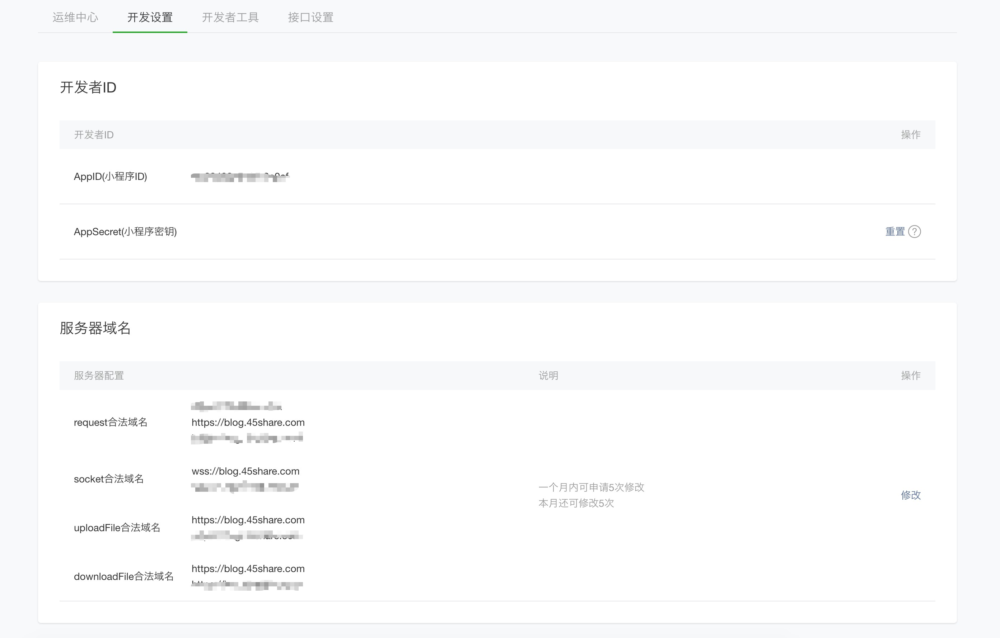

Wetypecho开源代码下载地址
Wethpecho
搭建必要条件
微信方面
网站方面
插件安装
- 插件安装包下载完成后解压
- we-typecho-plugin文件夹重命名为WeTypecho 重要！
- 然后将修改好的文件夹上传至/usr/plugins目录下
- 填写好相关数据即可
注：api密钥自行设定，与小程序端API_SECRET一致即可
微信小程序

小程序端配置
var domain = "博客地址"
var name = "小程序页脚名称"
var API_SECRET = "与插件api密钥一致"
export default {
getdomain: domain,
getname: name,
getapisecret: API_SECRET
}
app.json
{
"debug": true,
"window": {
"navigationBarTextStyle": "black",
"navigationBarBackgroundColor": "#f5f5f5",
"navigationBarTitleText": "小程序名称",
"backgroundColor": "#ffffff",
"backgroundTextStyle": "dark"
},
Template/foot.wxml
<template name="foot">
<view class="footerview">
<text >版权信息</text>
</view>
<view class="footerviewwebsite">
<text style>版权信息</text>
</view>
</template>
常见问题
- 小程序调试报错：是否备案以及https
- 图片缩略图不显示：图片是否使用CDN，是否将图片CDN地址添加到微信小程序合法域名，是否CDN白名单等
如果检查了上面的问题，依旧不能正常显示图片，就有可能是主题和插件有冲突，本博客的主题就会出现文章添加其他字段后，再发布就会导致缩略图不能正常显示。
小程序地址

- 修改了小程序UI
- 去除了部分不需要的功能
- 增加了例如文章内页回到首页的按钮等